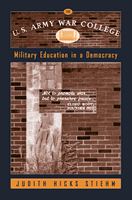

<body bgcolor="#FFFFFF" text="#000000" link="#0000FF" vlink="#CC0000" alink="#CC0000"><center><hr width="350" size="1" align="center" noshade>A look inside the U.S. Army War College<hr width="350" size="1" align="center" noshade><p><a href="https://cdcshoppingcart.uchicago.edu/Cart/ChicagoBook.aspx?ISBN=9781566399593&&PRESS=temple" target="_top">Buy this book!</a> | <a href="https://cdcshoppingcart.uchicago.edu/Cart/Cart.aspx?PRESS=temple" target="_top">View Cart</a> | <a href="https://cdcshoppingcart.uchicago.edu/Cart/Cart.aspx?PRESS=temple" target="_top">Check Out</a></p><p></p></center><!--none//--><h1>The U.S. Army War College</h1>
<H2>Military Education in a Democracy</H2>
<h3>Judith Hicks Stiehm</h3>
<P>cloth 1-56639-959-9 $85.50, Jun 02, <FONT COLOR=#990033>Available</FONT>
<br>paper 1-56639-960-2 $31.95, Jun 02, <FONT COLOR=#990033>Available</FONT>
<br>Electronic Book 1-43990-596-7 $31.95 <FONT COLOR=#990033>Available</FONT>
<BR> 272 pp
6x9
5&nbsp;tables 6&nbsp;figures 10&nbsp;halftones
</P><BLOCKQUOTE><I>"Judith Stiehm's book provides an excellent history of the U.S. Army College and highlights the importance of quality professional military education in maintaining the strength of the U.S. military. She raises insightful and important questions that should be carefully considered by military officers and policy-makers alike in evaluating the future of the war colleges and the education they provide."</I>
<br>&#151<b>The Honorable Ike Skelton</b>, Ranking Member, House Armed Services Committee<I></I></BLOCKQUOTE>
<p>We are all familiar with ROTC, West Point, and other institutions that train young men and women to be military officers. But few people know of the U.S. Army War College, where the Army's elite career officers go for advanced training in strategy, national security policy, and military-government policymaking. This book takes readers inside the U.S. Army War College to learn about the faculty, staff, administration, and
curriculum.
<p>Established in 1901, the school's mission has evolved from teaching the skills of war to training officers to negotiate both the complex world of modern strategy and the civilian bureaucracy in Washington. More like a professional graduate program than an academic graduate school, much of the education takes the form of exercises and simulations.
<p>Judith Stiehm, who holds the U.S. Army Distinguished Civilian Service Medal, allows readers to judge whether the U.S. Army War College successfully prepares its students for their many roles. She is skeptical that instructors can fulfill this difficult task in an era where civilians expect our military to be invincible, to win without casualties, and to serve as peacekeepers.
<p>The Military answers to the people of the United States and it is our responsibility to know how it operates at all levels. This book is a good place to start.
<BR>&nbsp;<h2>Excerpt</h2><P>Excerpt available at <a href="http://www.temple.edu/tempress">www.temple.edu/tempress</a></p>
<BR>&nbsp;<h2>Reviews</h2>
<p><I>"In this well-researched and crisply written book, Stiehm, a long-time student of military affairs, takes us inside the Army War College. She not only makes us aware of its faculty, staff, administration and curriculum, but also makes specific recommendations for how the War College may serve the military and nation better."</I>
<br>&#151<b>Lawrence J. Korb</b>, Director of Studies at the Council On Foreign Relations and former Assistant Secretary of Defense
<p><I>"A thoughtful and well-researched study of the Army's prestigious senior service college. The reader has much to consider in drawing his or her own conclusions about the college and its proper direction in a constantly-changing world."</I>
<br>&#151<b>BG Evelyn " Pat " Foote</b>, USA ( Ret.) AWC Faculty 1979-82
<p><I>"This readable and insightful review of the Army War College is a must for Army professionals and elected or appointed civilian leaders with oversight. Stiehm has documented both strengths and weaknesses of the Army's institutional education of its future strategic leaders. Unfortunately, as she clearly documents, the balance is not as positive as the future demands. Her critique can contribute in major ways, to the development of the future leadership of the Army Profession."</I>
<br>&#151<b>Don M. Snider</b>, Professor of Political Science, US Military Academy, West Point
<p><I>"The Army War College is one of America's most significant institutions and&#151until now&#151least examined. We are greatly indebted to Stiehm who gives us both a candid description and an incisive blueprint of how to improve the Army's education of senior officers."</I>
<br>&#151<b>Charles Moskos</b>, Professor of Sociology, Northwestern University
<p><i>"The strengths of this book are in the chapters detailing the history of the Army War College."</i>
<br>&#151<b><i>On Point: The Journal of Army History</i></b>
<p><i>"...an in-depth and insightful examination of the U.S. Army War College.... Stiehm provides much grist for the intellectual mill and does the Army War College a service by creating a framework for professional dialogue and offering recommendations for future improvements."</i>
<br>&#151<b><i>Naval War College Review</i></b>
<p><i>"Stiehm' s work provides a thorough overview of the USAWC and the ideology of its curriculum. Her analysis of the college merits attention by policy makers..."</i>
<br>&#151<b><i>History of Education Quarterly</i></b>
<p><i>"Stiehm provides a useful analysis of critical challenges facing the nation's war colleges. For years, the nation's institutions of advanced military education have gone virtually unnoticed, and thus her book fills a significant gap in our understanding of the rich higher education landscape in the United States."</i>
<br>&#151<b><i>Perspectives on Political Science</i></b>
<BR>&nbsp;<h2>Contents</h2><P>
<p>Acknowledgments
<br>Introduction
<br>1. The War Colleges
<br>2. A History of the Army War College
<br>3. Army War College Students
<br>4. Army War College Faculty
<br>5. The Carlisle Experience
<br>6. The Cold War Curriculum at the Army War College
<br>7. The Curriculum in Transition, 1989-90
<br>8. The Peacetime Curriculum
<br>9. Army War College Administrators and College Policymakers
<br>Conclusion
<br>Notes
<br>Index
<br>Photographs follow page 200
</P><BR>&nbsp;<H2>About the Author(s)</H2>
<table><tr><td valign="top"><img src="/tempress/authors/1638_au.gif" height="90" width="75"></td><td width="100%" valign="middle"><p><b>Judith Hicks Stiehm</b> is Professor of Political Science at Florida International University and the author of <I><a href="557_reg.html" target="_top">Arms and the Enlisted Woman</a></I>; <I><a href="1203_reg.html" target="_top">It's Our Military, Too</a></I> (both published by Temple); and a report on women in peacekeeping for the Lessons Learned Unit of the United Nations' (UN) Department of Peacekeeping Operations. A member of the Council on Foreign Relations, she holds the U.S. Army Distinguished Civilian Service Medal.</P></td></tr></table>
<BR><H2>Subject Categories</H2>
<p><A HREF="/tempress/political.html" TARGET="_top">Political Science and Public Policy</a>
<BR><A HREF="/tempress/sociology.html" TARGET="_top">Sociology</a>
</p>
<p align="center"><a href="https://cdcshoppingcart.uchicago.edu/Cart/ChicagoBook.aspx?ISBN=9781566399593&&PRESS=temple" target="_top">Buy this book!</a> | <a href="https://cdcshoppingcart.uchicago.edu/Cart/Cart.aspx?PRESS=temple" target="_top">View Cart</a> | <a href="https://cdcshoppingcart.uchicago.edu/Cart/Cart.aspx?PRESS=temple" target="_top">Check Out</a></p><p><font face="Arial" size="1"><a href="copyright.html" onMouseOver="window.status='Web Copyright Policy';return true;" onMouseOut="window.status=''" title="Web Copyright Policy">&copy;</a> 2015 <a href="http://www.temple.edu" target="new" onMouseOver="window.status='Link to Temple University home page';return true;" onMouseOut="window.status=''" title="Link to Temple University home page">Temple University</a>. All Rights Reserved. http://www.temple.edu/tempress/titles/1638_reg.html</font></p>